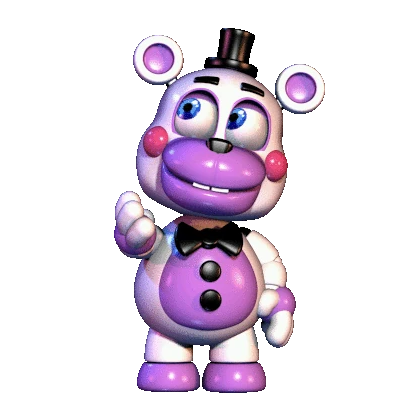
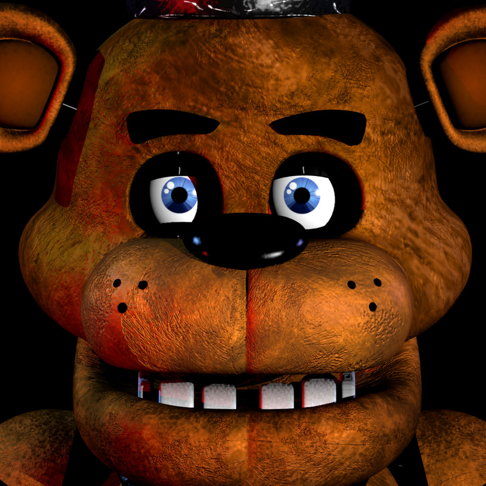
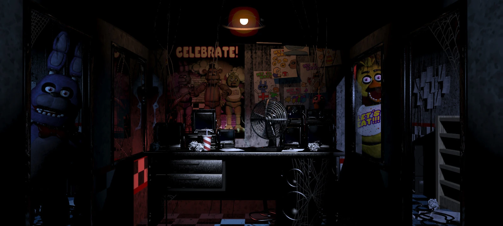
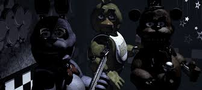
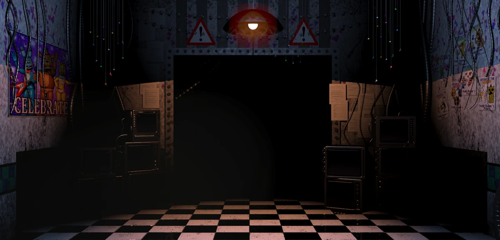
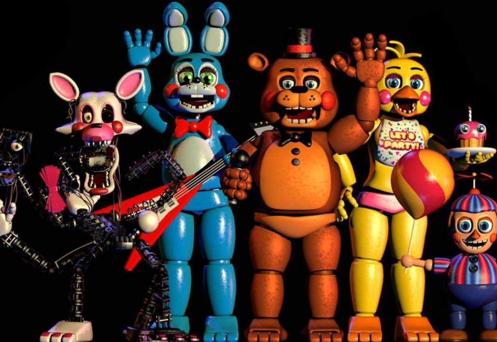
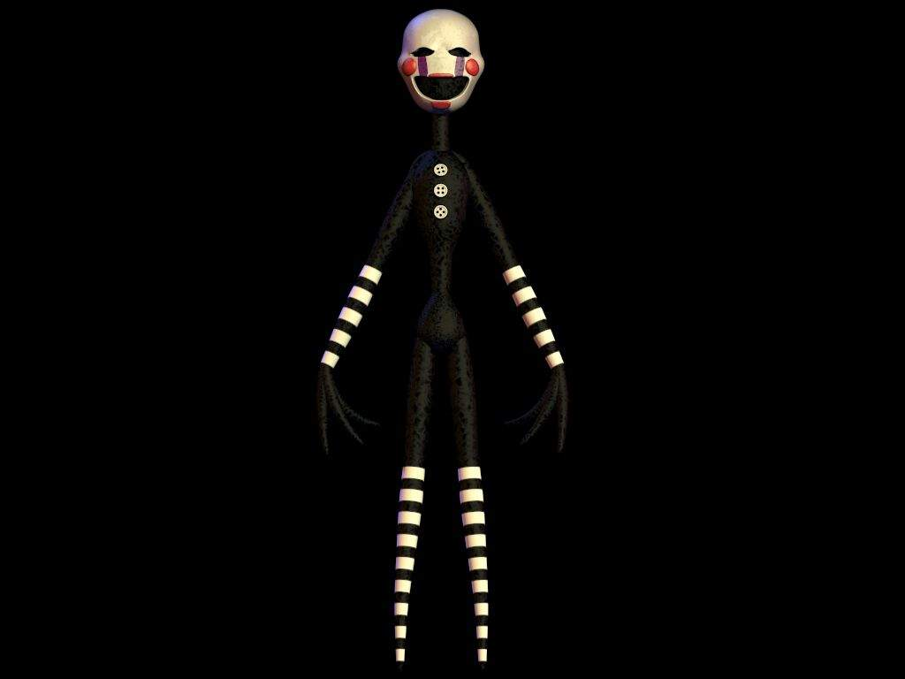
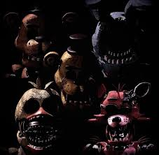
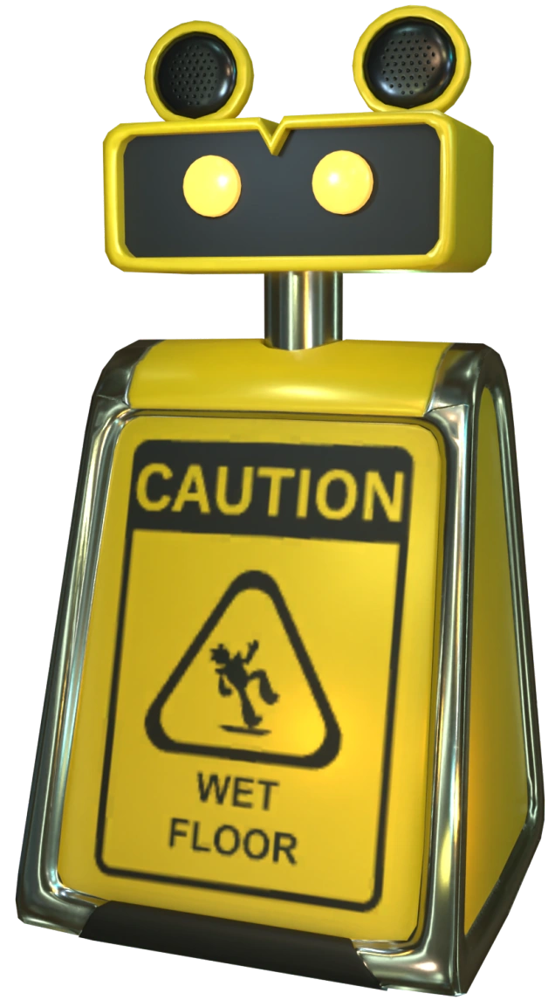

GUIA DE FNAF
 Five Nights at Freddy´s es una saga creada por el estadounidense Scott Cawton en el año 2014, originalmete Scott desarrollaba videojuegos infantiles, pero no fueron muy exitosos, sin embargo hubo un juego educativo de castores que fue muy mal recibido por la critica.
El juego fue muy duramente criticado, en espacial los estilos de los personajes, la critica afirmaba que estos daban miedo, cosa que era realmente malo ya que el objetivo de estos
personajes era dar ternura, ademas de mencionar que sus animaciones eran muy robotizadas e inhumanas.
Sin embargo, Scott le vio un potencial a esto, usando una mecanica suya de un juego viejo de defenderse de las amenazas de un bosque, y un poco de creatividad, hizo posible crear un ambiente muy perturbador, donde tu única fuente de
salvarte del peligro son unas puertas y un tope de suministro electrico bastante cuestionable.
Five Nights at Freddy´s es una saga creada por el estadounidense Scott Cawton en el año 2014, originalmete Scott desarrollaba videojuegos infantiles, pero no fueron muy exitosos, sin embargo hubo un juego educativo de castores que fue muy mal recibido por la critica.
El juego fue muy duramente criticado, en espacial los estilos de los personajes, la critica afirmaba que estos daban miedo, cosa que era realmente malo ya que el objetivo de estos
personajes era dar ternura, ademas de mencionar que sus animaciones eran muy robotizadas e inhumanas.
Sin embargo, Scott le vio un potencial a esto, usando una mecanica suya de un juego viejo de defenderse de las amenazas de un bosque, y un poco de creatividad, hizo posible crear un ambiente muy perturbador, donde tu única fuente de
salvarte del peligro son unas puertas y un tope de suministro electrico bastante cuestionable.
Conforme fue avanzando el tiempo el juego paso de un entorno 2D a uno 3D, ademas de lanzar su linea de libros, comics, merchandising oficial y su propia pelicula. Hoy es conciderado una saga muy importante en el gaming del terror, inspirando
a otros desarrolladores y personas a desarrollar sus propias ideas.
¿Qué es el Fnaf?
Five Nights at freddy´s es una saga de ciencia ficción y terror el cual no tiene protagonista fijo, va cambiando segun pasa el tiempo,
lo que si es que como "protagonistas" están las rencarnaciones de las almas de personas muertas que lograron crear el remanente de su propio ser.
En los inicios de la saga la historia comenzaba con la desaparición de 5 niños en una pizzería local, el cual resulta que fueron asesinados por William Afton
y sus cuerpos fueron ocultados en las atracciones principales (animatrónicas) de este local, el cual los niños rencarnarían en estos robots, logrando controlarlos
en búsqueda de venganza.
Sin embargo los más avanzados sabran que el inicio de la historia principal actualmente es otro muy distinto, por eso se hizo esta guía, para que los más nuevos puedan entender
como es la estructura e historia de esta saga, y como se mueve este mundillo de fnaf.
Terminologia
Antes de inicar explicando todo, es necesario hacer una pequeña introducción a las terminologia de esta saga, una terminología es una disciplina que se dedica a la recopilación,
descripción y presentación de los términos propios de los campos de especialidad, aunque un videojuego no es conciderado una espacialidad, en cada saga los significados van cambiando,
por lo que el significado de "canon" no es lo mismo para cada saga, por lo que apartir de aqui todo sera en el contexto de FNAF.

Lore:
Teoría:
Canon:
El lore es basicamente la
historia del juego en orden
cronológico.
Estas pueden estar sustentadas con pruebas o no
sin embargo la que mejor este sustentada y que ocurra en la linea principal
seran concideradas como "canon".
Las teorías son un conjunto de
ideas con el objetivo de resolver
parte de los puzzles de la saga, casi
siempre estaran orientadas a descubrir el lore.
Estas pueden estar sustentadas con pruebas o no
sin embargo la que mejor este sustentada y que ocurra en la linea principal
como "canon".
Canon se refiere a un hecho que ocurre
en la linea temporal principal de la saga, (que es
la de los videojuegos). El que algo no sea canon (sobre todo
los libros) no es sinónimo que no sirva como pistas y/o evidencias para entender
el lore. Este punto tendra más sentido conforme avancemos en esta guia.
Remanente:
Linea temporal:
UCN:
Líquido de color rojizo, este líquido contiene el alma de quien fue extraída, tiene características regenerativas, además
de que los metales se comportan como esponja en presencia de este líquido, existen 2 tipos, el luminoso y el oscuro, aunque en el
90% de las veces siempre se verá un único remanente (el oscuro), este se alimenta de los sentimientos malos de las personas, como, por ejemplo:
tristeza, recuerdos malos, dolor y la agonía, este último es la mayor fuente de alimentación de este remanente. Por otro lado, el remanente
blanco no hay mucha información de este, pero por la logica del oscuro, se especula que el blanco se alimenta de buenos sentimientos.
Aunque el significado en bruto de la línea temporal no cambie, en todas las sagas son tratas de manera distinta sus líneas temporales
en el caso de FNAF se dividen en 3 líneas principales: La de los juegos (la más importante), la de los libros (no canon) y la de la película,
cada uno cuenta con características y acontecimientos similares, sin embargo, en FNAF todas las líneas son paralelas, es decir, jamás se juntan en un suceso o en una fecha, en todo caso
sería que no hay ninguna bifurcación en todas las líneas temporales
Aunque aún no llegamos a las contracciones que se usan en este juego me gustaría tocar esta contracción como "especial"
ya que suena muy parecido a "UCM" (Universo cinematográfico de Marvel) cosa que es errónea, UCN se refiere al juego Five Nights
at Freddy´s Ultimate Custome Night y como su nombre lo dice, este es el último fnaf con una noche customizable, es decir, que puedas modificar
la dificultad de los animatronicos. Este juego es muy importante ya que le da fin a 1 de las 3 partes de la cronología de FNAF.
Discos ilusorios:
Gases ilusorios:
Animatronicos:
Es un aparato cuya función es emitir un sonido a cierta frecuencia específica para que el escuchador,
se le sea afectado su realidad, por ejemplo, que vea una pared que no existe.
Este es un complemento de los discos, su única función es corregir los errores naturales de los discos,
haciendo que la alucinación presentada por el disco se sienta más realista.
Son robots humanoides, es donde las almas toman control al ser inyectados por remanente.
Algunas cosas a aclarar es que el control del remanente no se limita a los animatronicos, también pueden controlar otros objetos
aunque con sus limitaciones naturales.
Introducción a los juegos
Los juegos de fnaf es lo más importante de la saga, ya que estos definen el rumbo de la saga
y como este cambiara en la historia, existen más de 20 juegos, sin embargo, son apenas 13 los indispensables, siendo los demás
complementos de los principales. En esta ocasión únicamente daremos un repaso general, posteriormente haremos un análisis complemento
de cada juego.
Five Nights at Freddy´s

Este es el primer juego lanzado por Scott el 8 de agosto de 2014, este y los que le siguen están hechos en un entorno 2D en el motor grafico
Clickteam las mecánicas son simples, eres un guardia nocturno que necesita a aguantar a 4 animatronicos
asesinos (5 si contamos al especial), sus nombres son: Chica, Freddy, ,
Bonnie y Golden Freddy.

Estamos en el local de Freddy´s Fazbear Pizza, somos el guardia nocturno, tenemos que aguantar de 12AM a 6AM. En este fnaf tenemos un sistema de cámaras y puertas,
según el "chico del teléfono" los animatronicos se vuelven más activos conforme avanzan las noches, para protegernos tenemos un sistema de cámaras y las puertas para
detener el paso de los animatronicos a nuestra oficina. Es importante recalcar que la empresa a la que fuimos contratados nos mencionada que los animatronicos en su modo libre
por "naturaleza" se dirigen a donde haya ruido.

Sin embargo Phone Guy (chico del teléfono) nos advierte que Fazbeard Entretaiment (dueños del local) han metido recortes de luz
durante la jornada nocturna, dándonos un tope de consumo por noche, por lo que debemos de administrar nuestro consumo y no desperdiciar la energía.

Nuestra labor será aguantar un mínimo de 5 noches, después podrás jugar una noche 6, después de completarlo puedes hacer una noche customizable (modificar la dificultad de los personajes),
donde sí completamos esta noche con todos los animatronicos al máximo, obtendremos el final completo, obteniendo las 3 estrellas del juego.

Five Nights at Freddy´s 2
Esta es la segunda entrega de la saga, lanzado el 11 de noviembre del 2014, una vez más, este juego es en 2D y desarrollado en Clickteam
aqui las cosas ya no son tan sencillas, no tenemos puertas y tenemos unicamente una linterna, camaras y una mascara para aguantar una vez mas hasta las 6 A.M.


Esta vez tenemos que enfrentarnos cara a cara con los animatronicos, cada animatronico se evita de 1 de las 3 formas, poniéndote la mascara, iluminando o
recargando la caja musical, esta vez nos enfretamos a 12 animatronicos de 2 clases, los toys y los whitered.



En esta ocación tenemos a las gamas de animatronicos, tenemos a los toys (imagen de la izquierda) y los whitered, los whitered son los originales pero matrataodos,
mientras que los toys son los más nuevos y conervados

Lo sentimos, estamos trabajando
pronto más fnaf
Bibliografia:
https://conogasi.org/articulos/que-es-la-terminologia/
|